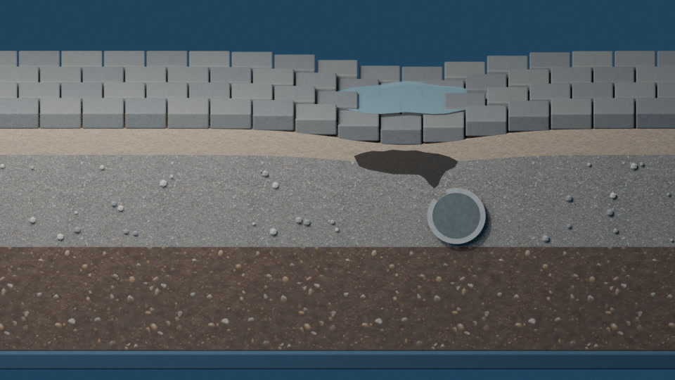

비 온 뒤 물이 고인다
포장 높이와 배수구·관로를 확인합니다.
부대토목부터 포장·배수·조경·유지보수까지,
외부공간의 여러 공종을 함께 살핍니다.
서로 맞물리는 공종을 한 계약으로 살핍니다.
사진은 AI 예시이며 실제 오주건설 시공 실적이 아닙니다. 보도블럭 꺼짐 한 사례를 아래 입체 모식으로 살펴봅니다.
포장 높이와 배수구·관로를 확인합니다.

단차와 포장 하부·지반을 살펴봅니다.

배수구 입구와 연결관 상태를 확인합니다.

누수 위치와 주변 방수·배수 상태를 살펴봅니다.
한 가지 가능한 원인을 단면으로 따라봅니다. 실제 현장의 상태는 점검으로 확인해야 합니다.

스크롤하면 장면이 앞뒤로 움직입니다. 버튼으로도 이동할 수 있습니다.
아래 다섯 단계가 위 입체 모식이 보여주는 전부입니다. 비율·형상은 과장된 모식입니다. 아스팔트 균열·패임은 낡음·반복 하중·하부 지지 약화가 겹치면 생길 수 있습니다. 물이 고이는 것은 내려앉음 때문만은 아닙니다. 기울기가 부족하거나 거꾸로 된 곳, 배수구 막힘 등 다른 원인도 있습니다. 어느 경우인지는 현장 점검으로 가립니다.
포장 표면의 기울기를 따라 물길이 생기고, 줄눈 사이로는 일부가 스며듭니다. 스며든다는 사실 자체가 곧바로 결함을 뜻하지는 않습니다. 다만 스며든 물의 양이 많거나 흙이 함께 쓸려 나가는지가 함께 중요합니다.
여러 가능성 중 하나를 보여줍니다. 관로 같은 매설물이 손상된 틈이 있으면 물과 함께 가는 흙이 이동할 수 있습니다. 흔한 일이라고 단정하지 않으며, 특정 현장의 원인을 가리키지 않습니다. 자갈 사이의 작은 공극과 재료가 유실되어 커진 빈 공간은 다릅니다.
모래·자갈층 아래에 이상 공동(예시, 과장)이 자라면 위 보도블럭은 지지를 잃습니다. 겉보기에는 멀쩡해 보여도 밟으면 흔들릴 수 있습니다. 이때 필요한 것은 기술 점검입니다.
사람·차량 하중이 반복되면 지지 잃은 블럭이 내려앉아 단차가 생기고, 내려앉은 낮은 곳에 물이 고입니다. 표면의 물은 항상 낮은 곳으로만 흐르며 위로 흐르지 않습니다. 다만 모든 고임이 침하 때문은 아닙니다.
A 표면 정비(하부와 배수가 양호하고 표면이 문제일 때), B 하부 보강(빈 공간·지지력 문제일 때), C 배수·관로 정비(막힘·손상이 원인일 때). 하부 문제를 남긴 채 표면만 고치면 다시 꺼질 수 있습니다.
어느 방향인지는 높이·배수·하부·관로 점검과 기술 검토로 정합니다. 표면 모습만으로는 정할 수 없습니다.
하부 지지와 배수 상태가 양호하고 표면의 높이·기울기가 원인이라면 블럭과 표면을 다시 맞추는 방향을 검토합니다.
이상 공동이나 지지력 저하가 확인되면 하부부터 메우고 다져 지지를 회복한 뒤 표면을 맞춥니다. 표면만 덧씌우면 재발할 수 있습니다.
배수구 막힘, 연결관·관로 손상이 원인이면 물길과 관로 상태를 정비합니다. 관로 손상과 주변 흙 유실이 함께 확인되면 관로 보수와 주변 하부 보강을 함께 검토한 뒤 표면을 복원합니다.
이 장면은 설명용 예시입니다. 비율·형상·수치와 실제 보수 방법은 현장 조사와 기술 검토 후 결정합니다. 특정 현장의 상태를 단정하지 않으며, 물의 움직임을 정밀 계산한 영상이 아니라 이해를 돕는 모식입니다. 온라인 문의 양식은 전송되지 않습니다. 실제 문의는 043-265-6010으로 전화해 주세요.
겉모습만으로 포장 하부의 상태는 알 수 없습니다.

 문제 상황 예시개선 모습 예시AI 이미지 · 실제 시공 사진 아님
문제 상황 예시개선 모습 예시AI 이미지 · 실제 시공 사진 아님좌우로 움직여 비교할 수 있습니다. 키보드 방향키도 사용할 수 있습니다.
회사 정보와 시공 범위를 확인하세요.